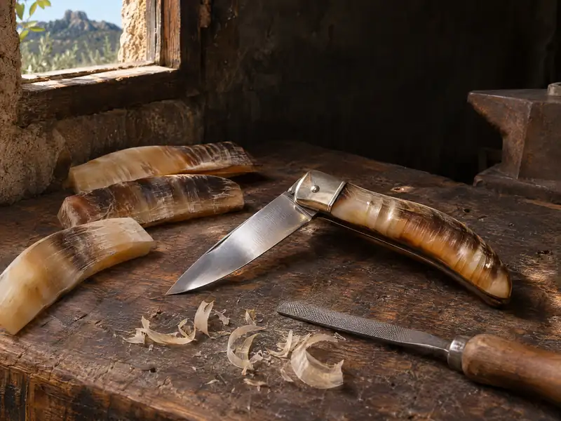

Coltelli a serramanico, Sardegna
Fatti a mano. Misurati sul righello.
Lama in acciaio, manico in corno di montone o in olivastro. Su ogni coltello scriviamo quanto è lunga la lama, chiuso e aperto. E quando perde il filo, lo riaffiliamo gratis.
Vedi i coltelliIl righello sotto ogni coltello
Un coltello da tasca si sceglie con le mani. Online te lo mettiamo sul righello: la riga chiara è il manico, quella color corno è la lama che esce quando lo apri. Tocca una misura e il coltello si apre.
Coltelli e cose per tenerli
Spedizione tracciata 9,90 €, gratis da 150 €. Vendiamo coltelli solo a chi ha almeno 18 anni.
Riaffilatura per sempre
Quando la lama non taglia più come il primo giorno, ce la mandi. La riaffiliamo a mano e te la rispediamo, senza pagare niente, finché il coltello dura.